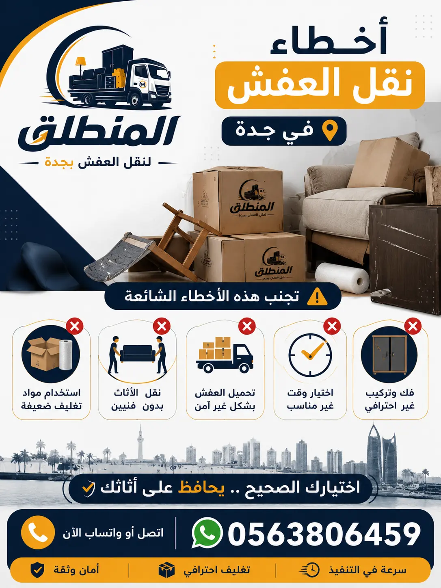

أخطاء نقل العفش في جدة هي السبب الرئيسي لتلف الأثاث وخسائر المال والوقت. في هذا الدليل الشامل، نكشف لك أكثر أخطاء نقل الأثاث شيوعاً وكيفية تجنب أضرار نقل العفش. شركة المنطلق تشاركك خبرتها لضمان نقل آمن وسلس في جميع أحياء جدة.

أخطاء تغليف العفش هي من أكثر الأسباب شيوعاً لتلف الأثاث أثناء النقل في جدة. كثير من الأشخاص يظنون أن تغليف الأثاث مجرد لف القطع بالبلاستيك، لكن الحقيقة أن التغليف الاحترافي يتطلب مهارة ومواد خاصة. من أخطر أخطاء نقل العفش في جدة هو استخدام مواد تغليف رديئة أو غير مناسبة لنوع الأثاث. فمثلاً، استخدام البلاستيك العادي بدلاً من البلاستيك الفقاعي قد يؤدي إلى خدوش عميقة على الأسطح الخشبية أو الزجاجية. أيضاً، عدم تغليف الزوايا والأطراف يؤدي إلى تلفها خاصة أثناء التحميل والتفريغ. خدمة تغليف العفش في جدة من شركة المنطلق تضمن لك تغليفاً احترافياً يمنع هذه الأخطاء.
خطأ آخر شائع هو عدم تغليف الأثاث قبل فكه، مما يؤدي إلى فقدان القطع الصغيرة أو اختلاطها. أيضاً، عدم استخدام صناديق مخصصة للزجاج والمرايا قد يؤدي إلى كسرها بسهولة. مدونة تغليف العفش في جدة تقدم نصائح مفصلة حول كيفية تجنب هذه الأخطاء. تذكر أن التغليف الجيد هو استثمار في سلامة أثاثك، وإهماله قد يكلفك مبالغ كبيرة لإصلاح أو استبدال القطع التالفة. كيفية تغليف الأثاث بشكل صحيح هي مهارة يجب أن يتقنها فريق النقل المحترف.
أخطاء فك وتركيب الأثاث هي من أكثر الأسباب التي تؤدي إلى تلف الأثاث أثناء النقل. كثير من الأشخاص يحاولون فك الأثاث بأنفسهم دون خبرة كافية، مما يؤدي إلى كسر الأجزاء أو فقدان المسامير أو تركيبها بشكل خاطئ. من أكبر أخطاء نقل العفش في جدة هو عدم ترقيم القطع أثناء الفك، مما يجعل إعادة التركيب مستحيلة أو تستغرق وقتاً طويلاً. أيضاً، استخدام أدوات غير مناسبة مثل المفكات العادية بدلاً من المفكات الكهربائية قد يتسبب في خدوش أو تلف الخشب. خدمة فك وتركيب الأثاث في جدة من شركة المنطلق تضمن لك فكاً منهجياً وتركيباً دقيقاً.
خطأ آخر شائع هو عدم حفظ المسامير والبراغي في أكياس مخصصة، مما يؤدي إلى فقدانها أو خلطها بين القطع المختلفة. أيضاً، عدم توثيق خطوات الفك بالصور أو الفيديو قد يجعل عملية التركيب صعبة جداً. مدونة فك وتركيب الأثاث تقدم نصائح قيمة لتجنب هذه الأخطاء. تذكر أن فك وتركيب الأثاث يحتاج إلى خبرة وفنيين متخصصين، وإلا قد تتسبب في تلف دائم لأثاثك الثمين. كيف تختار شركة نقل أثاث محترفة؟ اختر من يملك فريقاً متخصصاً في الفك والتركيب.
اختيار شركة نقل غير موثوقة هو أحد أكبر أخطاء نقل العفش في جدة. كثير من الأشخاص يقعون في فخ الإعلانات الرخيصة أو الشركات الوهمية التي تقدم أسعاراً منخفضة جداً، لكنها تقدم خدمات سيئة تؤدي إلى تلف الأثاث أو تأخير النقل أو حتى فقدان بعض القطع. شركات نقل العفش في جدة تختلف بشكل كبير في جودة خدماتها، واختيار الشركة الخطأ قد يكلفك أضعاف ما وفرته من نقود.
من علامات الشركة غير الموثوقة: عدم وجود ترخيص رسمي، عدم تقديم معاينة مجانية، عدم وجود ضمان على الأثاث، عدم وجود فريق مدرب، استخدام سيارات قديمة غير مجهزة. شركة نقل عفش بجدة المنطلق هي الخيار الموثوق الذي يضمن لك نقلاً خالياً من الأخطاء. أفضل شركة نقل عفش في جدة هي التي تضع جودة الخدمة ورضا العميل في مقدمة أولوياتها. أفضل شركات نقل العفش في جدة تتميز بالشفافية والاحترافية.
عدم التخطيط المسبق هو من أكثر أخطاء نقل العفش في جدة شيوعاً. كثير من الأشخاص يبدأون في ترتيب النقل قبل أيام قليلة من الموعد، مما يؤدي إلى فوضى وإرباك ونسيان بعض الأغراض. التخطيط الجيد يشمل: تحديد تاريخ النقل، حجز الشركة قبل أسبوعين على الأقل، فرز الأغراض وتحديد ما سيتم نقله وما سيتم التخلص منه، شراء مواد التغليف اللازمة، وتنسيق موعد التسليم والاستلام مع الطرفين.
من أخطاء التخطيط الشائعة: عدم قياس الأثاث ومقارنته بمداخل المنزل الجديد، مما قد يؤدي إلى عدم قدرة الأثاث على الدخول. أيضاً، عدم ترتيب الأولويات قد يؤدي إلى نسيان بعض الأغراض المهمة. نقل العفش في جدة يحتاج إلى تخطيط دقيق لضمان سير العملية بسلاسة. أسعار نقل العفش في جدة تتأثر أيضاً بحجم التخطيط، فالتخطيط الجيد يوفر الوقت والجهد والمال. اتصل بنا للحصول على استشارة مجانية حول تخطيط نقل عفشك.
أخطاء تحميل العفش في الشاحنة هي من الأسباب الرئيسية لتلف الأثاث أثناء النقل. تحميل الأثاث بشكل غير صحيح قد يؤدي إلى سقوط القطع أو احتكاكها ببعضها البعض أو تلفها بسبب الاهتزازات. من أكبر أخطاء نقل العفش في جدة هو وضع الأثاث الثقيل فوق الأثاث الخفيف، مما يؤدي إلى كسر أو تشوه القطع السفلية. أيضاً، عدم تثبيت الأثاث داخل الشاحنة بحبال أو أحزمة قد يؤدي إلى حركته أثناء الطريق.
خطأ آخر شائع هو عدم توزيع الوزن بشكل متوازن في الشاحنة، مما يؤثر على ثباتها وقد يؤدي إلى حوادث. سيارات نقل العفش في جدة يجب أن تكون مجهزة بأنظمة تثبيت متطورة. نقل العفش مع التغليف يقلل من مخاطر التحميل الخاطئ. فريق شركة المنطلق مدرب على أحدث طرق التحميل الآمنة التي تضمن وصول أثاثك بحالة ممتازة.
إهمال حماية الأرضيات والجدران هو خطأ شائع أثناء نقل العفش في جدة. كثير من الأشخاص يركزون على حماية الأثاث وينسون أن الأرضيات والجدران قد تتضرر أيضاً أثناء عملية النقل. خدوش الأرضيات الرخامية أو الباركيه قد تكلف آلاف الريالات لإصلاحها. من أخطاء نقل العفش في جدة التي يتجاهلها الكثيرون هو عدم استخدام أغطية واقية للأرضيات والجدران أثناء تحريك الأثاث الثقيل.
الحل بسيط: استخدام أغطية بلاستيكية أو كرتونية لحماية الأرضيات، واستخدام زوايا واقية لحماية الجدران من الخدوش. نقل عفش الفلل في جدة يتطلب عناية خاصة بحماية الأرضيات الفاخرة. خدماتنا تشمل حماية شاملة للمنزل أثناء النقل. تواصل معنا لطلب خدمة حماية الأرضيات والجدران.
أخطاء نقل الأجهزة الكهربائية هي من أكثر الأخطاء تكلفة في نقل العفش في جدة. الأجهزة مثل الثلاجات والغسالات والمكيفات والشاشات تحتوي على مكونات حساسة للصدمات والاهتزازات. من أكبر أخطاء نقل العفش في جدة هو عدم تفريغ الثلاجة من الطعام وعدم تركها لتذويب الثلج قبل النقل، مما قد يؤدي إلى تسرب المياه وتلف الضاغط. أيضاً، عدم تثبيت براغي النقل في الغسالة قد يؤدي إلى تلف الحلة الداخلية.
خطأ آخر شائع هو نقل الشاشات بشكل أفقي بدلاً من عمودي، مما قد يؤدي إلى تلف الشاشة. نقل أثاث المكاتب في جدة يتطلب عناية خاصة بالأجهزة الإلكترونية. شركة نقل عفش بجدة المنطلق توفر تغليفاً خاصاً للأجهزة الكهربائية. سيارات نقل العفش في جدة لدينا مجهزة بأنظمة تعليق تقلل من الاهتزازات.
عدم التأمين على الأثاث هو خطأ كبير يرتكبه الكثيرون أثناء نقل العفش في جدة. حتى مع أفضل شركات النقل، قد تحدث حوادث غير متوقعة مثل حوادث الطرق أو سقوط الأثاث. من أخطاء نقل العفش في جدة التي يتجاهلها الكثيرون هو عدم السؤال عن سياسة التأمين لدى شركة النقل. التأمين يغطي قيمة الأثاث في حالة التلف أو الفقدان، مما يوفر لك راحة البال.
بعض الشركات تقدم تأميناً محدوداً أو لا تقدم تأميناً على الإطلاق. شركة نقل عفش بجدة المنطلق تقدم تأميناً شاملاً يغطي أثاثك حتى 20000 ريال. أفضل شركة نقل عفش في جدة هي التي توفر تغطية تأمينية شاملة. اتصل بنا لمعرفة تفاصيل التأمين على أثاثك.
أخطاء التفريغ والتركيب هي المرحلة الأخيرة التي قد تدمر جهود النقل بأكملها. كثير من الأشخاص يفرغون الأثاث بشكل عشوائي دون تخطيط، مما يؤدي إلى فوضى وصعوبة في التنقل داخل المنزل الجديد. من أخطاء نقل العفش في جدة الشائعة هو عدم فتح الصناديق وترتيب المحتويات فور الوصول، مما قد يؤدي إلى نسيان بعض الأغراض أو فقدانها.
أيضاً، محاولة تركيب الأثاث دون قراءة التعليمات أو الاستعانة بمتخصص قد تؤدي إلى تركيب خاطئ أو تلف القطع. فك وتركيب الأثاث في جدة يحتاج إلى خبرة. نقل العفش مع التغليف يشمل أيضاً خدمة التركيب في المنزل الجديد. خدماتنا تضمن لك تركيباً احترافياً لجميع قطع الأثاث.
بعد أن استعرضنا أخطاء نقل العفش في جدة الأكثر شيوعاً، نقدم لك نصائح ذهبية لتجنبها وضمان نقل آمن وسلس. أولاً: اختر شركة نقل موثوقة مثل شركة المنطلق التي تمتلك خبرة وتقييمات إيجابية. ثانياً: خطط مسبقاً وحدد جدولاً زمنياً واضحاً للنقل. ثالثاً: استثمر في مواد تغليف عالية الجودة أو استخدم خدمة التغليف الاحترافي من الشركة. رابعاً: أبلغ فريق النقل عن أي قطع حساسة أو ثمينة. خامساً: تأكد من وجود تأمين على الأثاث.
سادساً: اشرف على عملية التحميل والتفريغ بنفسك أو عبر مندوب من الشركة. سابعاً: توثيق حالة الأثاث بالصور قبل النقل. ثامناً: اطلب معاينة مجانية من الشركة لتقييم الأثاث وتحديد التكلفة. تاسعاً: اقرأ العقود بعناية وتأكد من فهم جميع البنود. عاشراً: لا تتردد في طرح الأسئلة على فريق النقل. كيف تختار شركة نقل؟ اختر من يقدم لك هذه النصائح مجاناً. اتصل بنا للحصول على استشارة مجانية.
لتجنب أخطاء نقل العفش في جدة، اختر شركة تقدم أسعاراً شفافة وتنافسية. الجدول التالي يوضح الأسعار التقريبية لخدمات نقل العفش في جدة. أسعار نقل العفش في جدة تختلف حسب حجم الأثاث والمسافة والخدمات المطلوبة.
| نوع الخدمة | السعر (ريال) | ملاحظات |
|---|---|---|
| نقل شقة غرفة نوم | 300 - 450 | شامل الفك والتغليف والتركيب |
| نقل شقة 3 غرف | 750 - 1100 | شامل الفك والتغليف والتركيب |
| نقل فيلا صغيرة | 1500 - 2200 | شاحنة كبيرة + فريق |
| نقل فيلا كبيرة | 2500 - 4000 | فريق كامل + شاحنتين |
| تغليف فقط | 150 - 500 | حسب حجم العفش |
| فك وتركيب فقط | 200 - 600 | حسب عدد القطع |
| نقل أثاث مكتبي | 500 - 1200 | حسب حجم المكتب |
| تخزين العفش (شهرياً) | 150 - 400 | حسب المساحة |
| حزمة نقل + تغليف + تخزين | خصم 25% | عرض خاص للعملاء الجدد |
خصم 15% للحجوزات المسبقة لمدة أسبوعين. اتصل بنا للحصول على عرض سعر مخصص.
نحن في شركة المنطلق نخدم جميع أحياء جدة لـ نقل العفش في جدة، ونساعد عملاءنا على تجنب أخطاء نقل العفش في جدة من خلال خدماتنا الاحترافية. نخدم حي الروضة، حي الصفا، حي الفيصلية، حي السلامة، حي الزهراء، حي الربوة، حي النسيم، حي البساتين، حي الحمدانية، والمحمدية، والحمراء، والشاطئ، وأبحر، وغيرها.
مهما كان موقعك في جدة، فإن فريقنا جاهز للوصول إليك خلال 30 دقيقة. شاهد جميع الأحياء التي نخدمها.
نفخر بثقة عملائنا الذين استفادوا من خبرتنا في تجنب أخطاء نقل العفش في جدة. هذه الآراء تعكس التزامنا بالجودة والاحترافية. أفضل شركات نقل العفش في جدة تحظى بتقييمات إيجابية من عملائها.
"تعاملت مع شركة المنطلق لنقل عفش منزلي، وكانت تجربة رائعة. تجنبت جميع أخطاء نقل العفش التي كنت خائفاً منها. الفريق كان محترفاً جداً، والأثاث وصل سليماً. أنصح أي شخص يبحث عن نقل العفش في جدة بالتواصل معهم."
— أبو سعد، حي الروضة
"الحمد لله، استخدمت المنطلق لنقل فيلتي. كانوا حريصين على تجنب أضرار نقل العفش، واستخدموا مواد تغليف عالية الجودة. الأسعار كانت مناسبة، والخدمة كانت متكاملة. أفضل شركة نقل عفش في جدة بلا شك."
— الأستاذة نورة، حي الفيصلية
"فريق المنطلق كان ممتازاً في التعامل مع أثاث مكتبي. قاموا بفك وتركيب المكاتب والأجهزة بدقة، ولم يحدث أي تلف. أوصي بهم لكل من يبحث عن نقل أثاث مكاتب في جدة."
— المهندس خالد، حي السلامة
"نقلنا عفش منزلنا مع المنطلق، وكانت الخدمة ممتازة. تجنبوا جميع أخطاء نقل العفش في جدة التي سمعنا عنها. العمال كانوا محترمين وسريعين، والأسعار شفافة. نشكرهم على الخدمة المميزة."
— أم فيصل، حي الحمدانية
من أكثر الأخطاء شيوعاً: سوء التغليف، عدم فك الأثاث الكبير، اختيار شركة نقل غير موثوقة، عدم التخطيط المسبق، وتحميل الأثاث بشكل غير صحيح في الشاحنة.
استخدم مواد تغليف عالية الجودة مثل البلاستيك الفقاعي والكرتون المقوى، وتأكد من تغليف كل قطعة على حدة، وحماية الزوايا والحواف. اقرأ مدونة تغليف العفش.
نعم، اختيار شركة نقل غير موثوقة هو أحد أكبر الأخطاء التي قد تؤدي إلى تلف الأثاث أو تأخير النقل أو خسائر مالية. أفضل شركة نقل عفش في جدة هي التي تحل هذه المشكلة.
عدم ترقيم القطع، استخدام أدوات غير مناسبة، فقدان المسامير، ومحاولة التركيب دون خبرة. خدمة فك وتركيب الأثاث تحل هذه المشكلة.
تأكد من توزيع الوزن بشكل متوازن، وضع الأثاث الثقيل في الأسفل، وتثبيت الأثاث بحبال أو أحزمة. مدونة سيارات نقل العفش تقدم نصائح مفيدة.
نعم، إهمال حماية الأرضيات والجدران قد يؤدي إلى خدوش وأضرار مكلفة. استخدم أغطية واقية لحماية منزلك.
عدم تفريغ الثلاجة، عدم تثبيت براغي النقل في الغسالة، نقل الشاشات بشكل أفقي. اتصل بنا لطلب نقل آمن للأجهزة.
نعم، عدم التأمين على الأثاث يجعلك عرضة لخسائر كبيرة في حال حدوث أي ضرر. تأكد من وجود تأمين شامل قبل النقل.
خطط لترتيب الأثاث قبل التفريغ، واستعن بفريق محترف للتركيب. خدماتنا تشمل التركيب الاحترافي.
تختلف التكلفة حسب حجم الضرر، لكنها قد تصل إلى آلاف الريالات. لذلك، من الأفضل تجنب الأخطاء من البداية باختيار شركة محترفة.
اختر شركة ذات سمعة جيدة، وتقييمات إيجابية، وخبرة طويلة، وتقدم معاينة مجانية وضمان على الأثاث. كيف تختار شركة نقل دليل مفيد.
نعم، التغليف الاحترافي يمنع معظم أخطاء النقل مثل الخدوش والكسور. تغليف العفش في جدة من المنطلق يضمن ذلك.
تتراوح مدة نقل العفش بين 4 إلى 12 ساعة حسب حجم الأثاث والمسافة. التخطيط الجيد يقلل من الوقت المستغرق.
نعم، بعض الشركات مثل المنطلق تقدم خدمة تخزين العفش في مستودعات آمنة ومكيفة.
يمكنك الاتصال على 0563806459 أو عبر واتساب للحصول على استشارة مجانية وعرض سعر.
مع شركة المنطلق، تضمن نقلاً خالياً من الأخطاء مع فريق محترف ومواد تغليف عالية الجودة وضمان شامل. اتصل الآن للحصول على استشارة مجانية.